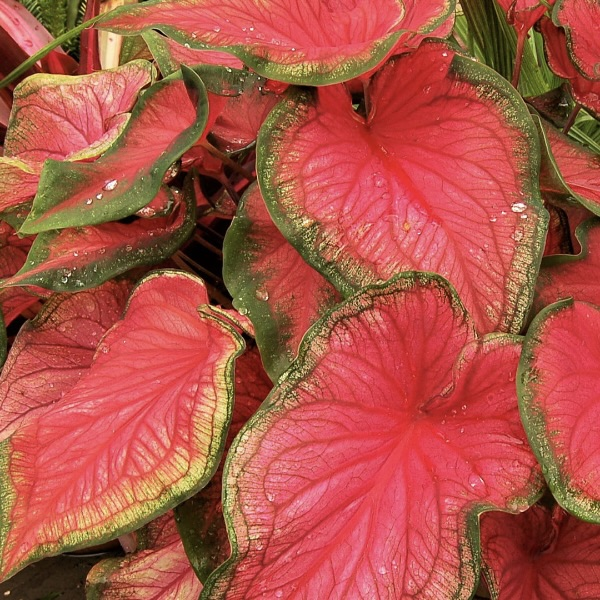
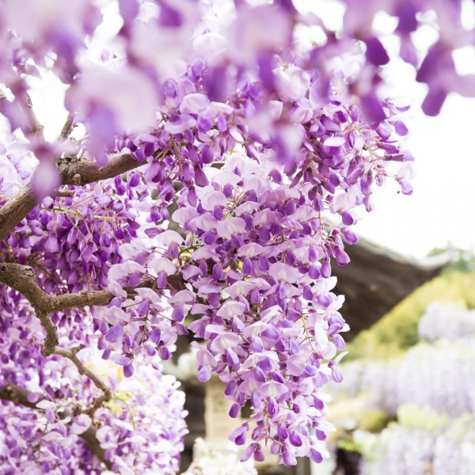
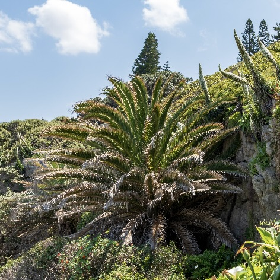
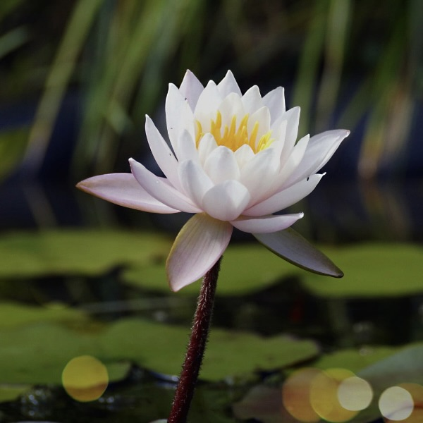
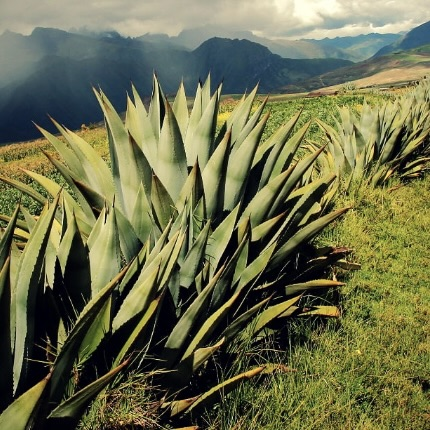
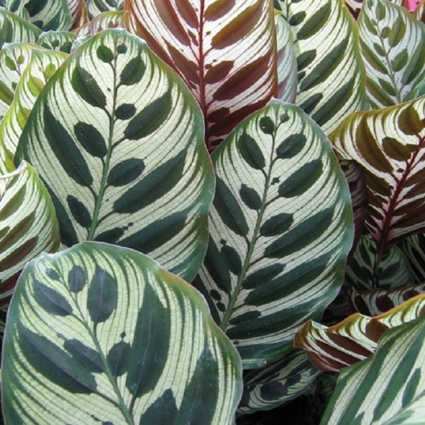
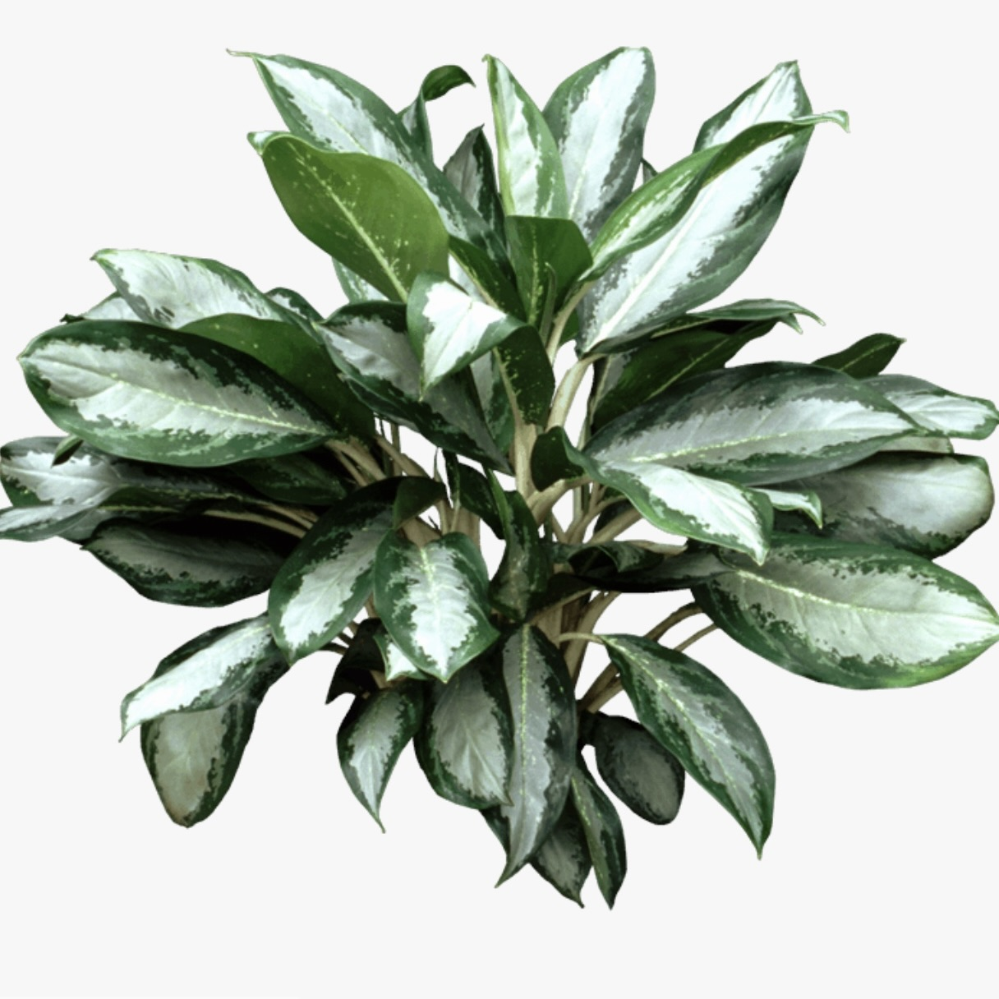
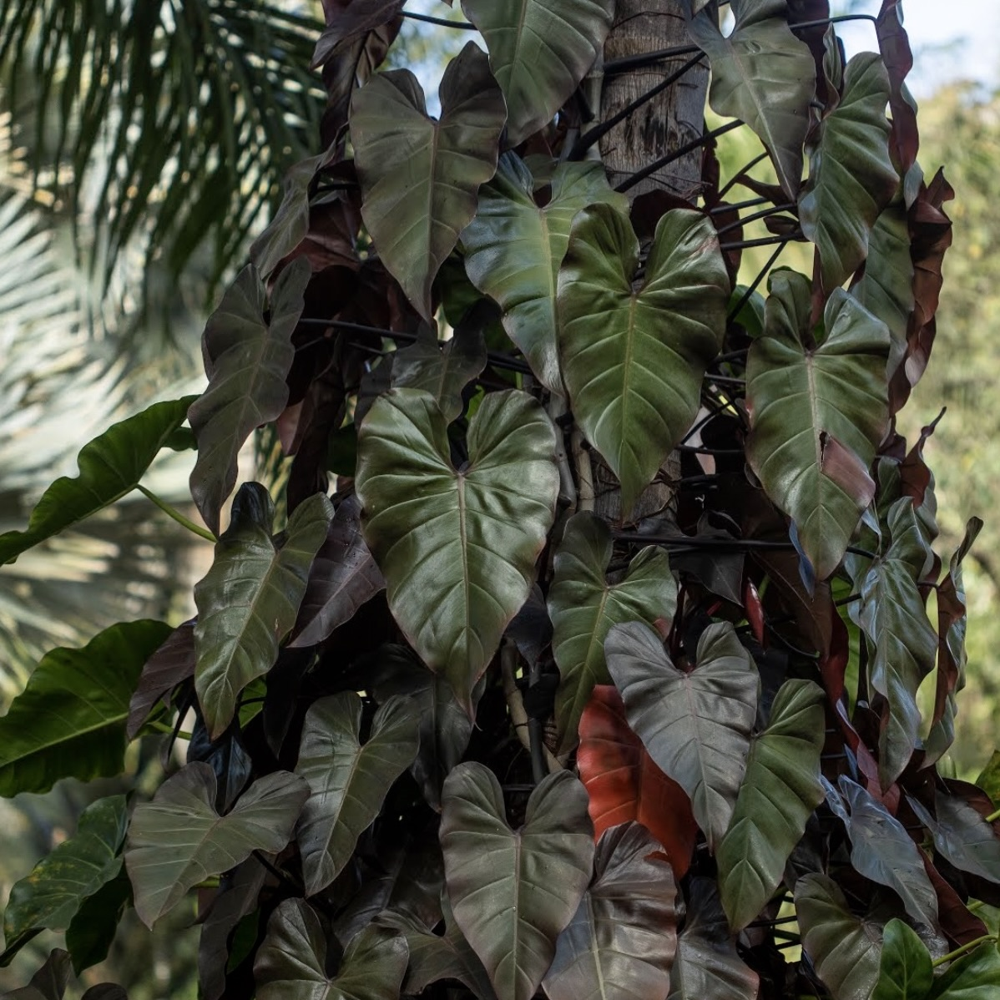
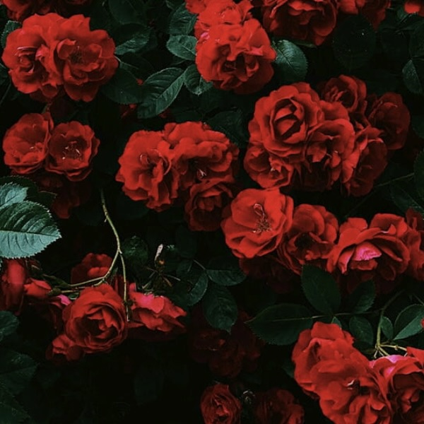

| 01. |
Caladium |
- June Bride
- Gingerland
- Miss Muffett
- Freida Hemple
- Fannie Munson
|
Caladiums have become one of the most popular foliage plants for shady or semi-shady gardens—with
many recent introductions being sun tolerant. Each leaf seems to be hand painted with striking
combinations of green, white, pink, and red. Although these tropical South American natives thrive in
hot, humid weather, they can be grown as summer bulbs in more temperate climates, or even as houseplants
given the right conditions.With a little pampering, these exotic shade dwellers create a glorious display
rivaling that of any flowering plant.
( Image : CALADIUM - Freida Hemple ) |

|
| 02. |
Vines Plants |
- Wisteria
- Mandevilla
- English Ivy
- Honeysuckle
- Bougainvillea
|
By general definition, a vine is an herbaceous or nonwoody plant with thin stems that uses neighboring
plants, rocks, trees, fences or other structures for physical support. These plants climb, creep and sprawl,
often spreading out horizontally, as well as mounting vertically. Common examples of plants that meet the
classic definition of a vine include members of the gourd family and several flowering plants in the bindweed
family, such as the annual morning glory.Despite their inability to support their own weight, vines have
remarkable tensile strength.
( Image : Wisteria ) |
 |
| 03. |
Palm Trees |
- Sago Palm
- Fan Palm
- Lady Palm
- Majesty Palm
- Cascade Palm
|
There are about 2600 species of palm trees, most of them living in tropical, subtropical, and warm
temperate climates. Palms are one of the best known and most widely planted tree families. They have
held an important role for humans throughout much of history. Many common products and foods come from
palms. They are often used in parks and gardens that are in areas that do not have heavy frosts.
In the past palms were symbols of victory, peace, and fertility. Today palms are a popular symbol
for the tropics and for vacations.
( Image : Sago Palm ) |
 |
| 04. |
Water Plants |
- Water Lily
- Water Poppy
- Calla Lilies
- Water Hyacinth
- American Lotus
|
Aquatic plants require special adaptations for living submerged in water, or at the water's surface.
The most common adaptation is the presence of lightweight internal packing cells, aerenchyma, but
floating leaves and finely dissected leaves are also common. Aquatic plants can only grow in water or
in soil that is frequently saturated with water. They are therefore a common component of wetlands.
One of the largest aquatic plants in the world is the Amazon water lily; one of the smallest is the
minute duckweed.
( Example Image : Water Lily ) |
 |
| 05. |
Cactus |
- Star-Cactus
- Feather-Cactus
- Castle-Cactus
- Saguaro-Cactus
- Christmas-Cactus
|
cactus, (family Cactaceae), plural cacti or cactuses, flowering plant family with nearly 2,000
species and 139 genera. Cacti are native through most of the length of North and South America, from
British Columbia and Alberta southward; the southernmost limit of their range extends far into Chile
and Argentina. Mexico has the greatest number and variety of species. The only cacti possibly native
to the Old World are members of the genus Rhipsalis, occurring in East Africa, Madagascar, and
Sri Lanka. Although a few cactus species inhabit tropical or subtropical areas, most live in and
are well adapted to dry regions.
( Image : Saguaro Cactus ) |
|
| 06. |
Agave |
- Sisal
- Shaw's Agave
- Octopus Agave
- Agave salmiana
- Queen Victoria Agave
|
agave, (genus Agave), genus of the some 200 species of the family Asparagaceae native to arid and
semiarid regions of the Americas, particularly Mexico, and the Caribbean. The genus contains a number
of economically important species, especially those required for the production of mescal liquors,
including the blue agave used for tequila, Sisal for henequen and cantala are significant sources of
fibre and are of interest as potential bioenergy crops. The century plant, or maguey , and blue agave
are the primary sources of agave nectar, a syrupy sweetener. Additionally, a number of species are grown
as ornamentals in desert landscaping.
( Image : Queen Victoria Agave ) |
 |
| 07. |
Calathea |
- Orbifolia
- veitchiana
- Zebra plant
- Jungle Velvet
- Calathea makoyana
|
There are many plants used for indoor decoration and indoor landscaping purposes. They brighten
offices, lobbies, meeting rooms and other interior areas and there are numerous benefits of plants for
offices and workspaces. Sometimes offices and businesses prefer a pop of green and some prefer to have
bright, colorful blooming plants. However, one of the key prerequisites of office plants is that they
be relatively easy to care for and able to thrive in places with low light.
( Image : Makoyama ) |
 |
| 08. |
Anglonema |
- Harlequin
- Anyanmanee
- Emerald Bay
- Silver Queen
- Maria Christina
|
These are evergreen perennials with stems growing erect or decumbent and creeping. Stems that grow
along the ground may root at the nodes. There is generally a crown of wide leaf blades which in wild
species are often variegated with silver and green coloration. The inflorescence bears unisexual f
lowers in a spadix, with a short zone of female flowers near the base and a wider zone of male flowers
nearer the tip. The fruit is a fleshy berry that ripens red. The fruit is a thin layer covering one
large seed. Plants of the genus are native to humid, shady tropical forest habit.
( Image : Emerald Bay ) |
 |
| 09. |
Philodendron |
- Philodendron Rugosum
- Philodendron Martianum
- Philodendron Plowmanii
- Philodendron Erubescens
- Philodendron Ventricosum
|
The foliage of philodendrons is usually green but may be coppery, red, or purplish; parallel leaf
veins are usually green or sometimes red or white. Juvenile and adult phases differ, making it almost
impossible to identify different species of small plants.Most philodendrons are great climbers, usually
growing upward by wrapping their modified roots around the trunks of trees. Once they have worked their way up to the canopy, they often transform
themselves into epiphytes. Plants with this life strategy are called secondary hemiepiphytes.
Unlike most plants, the seedlings of hemiepiphytes do not grow toward the Sun; instead they grow
toward a tree trunk.
( Image : Philodendron Erubescens ) |
 |
| 10. |
Floral Tea |
- Roses
- Linden
- Hibiscus
- Chamomile
- Blue Butterfly
|
Floral teas feature dried flowers like jasmine, rose, lavender, and chamomile in soothing, aromatic
blends that are full of flavor packed with anti oxidents .For centuries, flower blossoms have been
blended with tea and other herbs to create tasty and medicinal brews. Whether you’re dreaming of spring
flowers, looking for an iced tea to enjoy in the summer heat, or simply interested in teas with a flowery
note, a floral tea is sure to hit the spot!
( Image : Roses ) |
 |